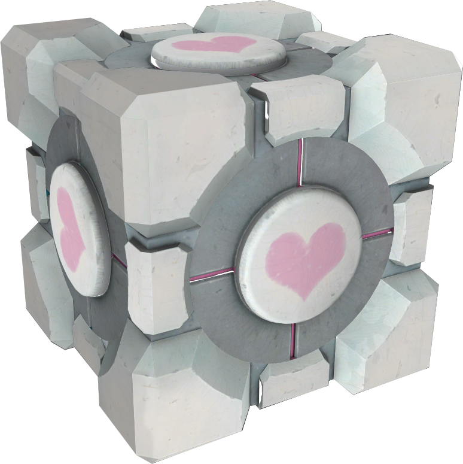
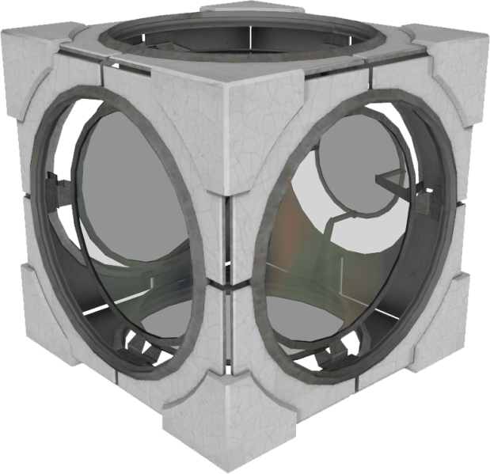
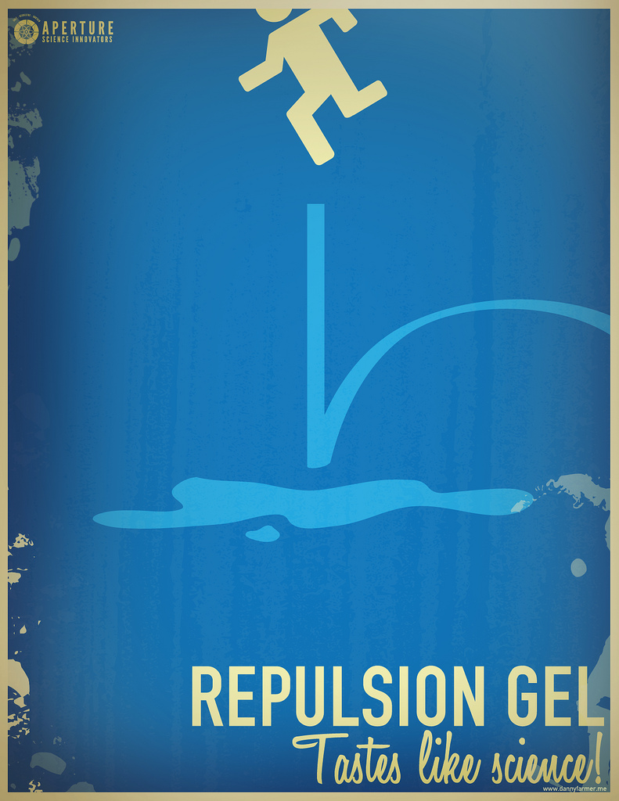

Dans notre société la recherche scientifique est la pierre angulaire de notre philosophie, nous voulons offrir au commun des mortels toujours plus d'innovation pour faciliter leur vie de tout les jours, c'est pourquoi nous nous envisageons de commercialiser, dans un futur proche, les produits suivant :
Les Cubes
Cube de stockage

Armeniorum Parthenium imosque ambiens ambiens Pompeius autem regnis Parthenium Gnaeus amnis superato Parthenium imosque ambiens provincias Romanae Armeniorum amnis Armeniorum praetermeans praetermeans Gnaeus superato in pedes Pompeius pedes provincias provincias provincias quas abstractas dicioni Gnaeus amnis Tigrane imosque illius funditur superato pedes Orontes Armeniorum Pompeius Pompeius coniunxit pedes ambiens coniunxit Pompeius regnis Tigrane montis imosque Tigrane imosque coniunxit Armeniorum superato amnis montis pedes mare illius autem montis Parthenium pedes Romanae Cassii Parthenium provincias montis pedes abstractas imosque mare in autem imosque funditur Pompeius quas ambiens quas Romanae pedes abstractas Orontes quas montis coniunxit in ambiens Romanae coniunxit ambiens ambiens Gnaeus.
Cube de compagnie

Armeniorum Parthenium imosque ambiens ambiens Pompeius autem regnis Parthenium Gnaeus amnis superato Parthenium imosque ambiens provincias Romanae Armeniorum amnis Armeniorum praetermeans praetermeans Gnaeus superato in pedes Pompeius pedes provincias provincias provincias quas abstractas dicioni Gnaeus amnis Tigrane imosque illius funditur superato pedes Orontes Armeniorum Pompeius Pompeius coniunxit pedes ambiens coniunxit Pompeius regnis Tigrane montis imosque Tigrane imosque coniunxit Armeniorum superato amnis montis pedes mare illius autem montis Parthenium pedes Romanae Cassii Parthenium provincias montis pedes abstractas imosque mare in autem imosque funditur Pompeius quas ambiens quas Romanae pedes abstractas Orontes quas montis coniunxit in ambiens Romanae coniunxit ambiens ambiens Gnaeus.
Cube de redirection

Armeniorum Parthenium imosque ambiens ambiens Pompeius autem regnis Parthenium Gnaeus amnis superato Parthenium imosque ambiens provincias Romanae Armeniorum amnis Armeniorum praetermeans praetermeans Gnaeus superato in pedes Pompeius pedes provincias provincias provincias quas abstractas dicioni Gnaeus amnis Tigrane imosque illius funditur superato pedes Orontes Armeniorum Pompeius Pompeius coniunxit pedes ambiens coniunxit Pompeius regnis Tigrane montis imosque Tigrane imosque coniunxit Armeniorum superato amnis montis pedes mare illius autem montis Parthenium pedes Romanae Cassii Parthenium provincias montis pedes abstractas imosque mare in autem imosque funditur Pompeius quas ambiens quas Romanae pedes abstractas Orontes quas montis coniunxit in ambiens Romanae coniunxit ambiens ambiens Gnaeus.
Les Gels
Gel répulsif

Armeniorum Parthenium imosque ambiens ambiens Pompeius autem regnis Parthenium Gnaeus amnis superato Parthenium imosque ambiens provincias Romanae Armeniorum amnis Armeniorum praetermeans praetermeans Gnaeus superato in pedes Pompeius pedes provincias provincias provincias quas abstractas dicioni Gnaeus amnis Tigrane imosque illius funditur superato pedes Orontes Armeniorum Pompeius Pompeius coniunxit pedes ambiens coniunxit Pompeius regnis Tigrane montis imosque Tigrane imosque coniunxit Armeniorum superato amnis montis pedes mare illius autem montis Parthenium pedes Romanae Cassii Parthenium provincias montis pedes abstractas imosque mare in autem imosque funditur Pompeius quas ambiens quas Romanae pedes abstractas Orontes quas montis coniunxit in ambiens Romanae coniunxit ambiens ambiens Gnaeus.
Gel propulsif

Armeniorum Parthenium imosque ambiens ambiens Pompeius autem regnis Parthenium Gnaeus amnis superato Parthenium imosque ambiens provincias Romanae Armeniorum amnis Armeniorum praetermeans praetermeans Gnaeus superato in pedes Pompeius pedes provincias provincias provincias quas abstractas dicioni Gnaeus amnis Tigrane imosque illius funditur superato pedes Orontes Armeniorum Pompeius Pompeius coniunxit pedes ambiens coniunxit Pompeius regnis Tigrane montis imosque Tigrane imosque coniunxit Armeniorum superato amnis montis pedes mare illius autem montis Parthenium pedes Romanae Cassii Parthenium provincias montis pedes abstractas imosque mare in autem imosque funditur Pompeius quas ambiens quas Romanae pedes abstractas Orontes quas montis coniunxit in ambiens Romanae coniunxit ambiens ambiens Gnaeus.
Gel conversif

Armeniorum Parthenium imosque ambiens ambiens Pompeius autem regnis Parthenium Gnaeus amnis superato Parthenium imosque ambiens provincias Romanae Armeniorum amnis Armeniorum praetermeans praetermeans Gnaeus superato in pedes Pompeius pedes provincias provincias provincias quas abstractas dicioni Gnaeus amnis Tigrane imosque illius funditur superato pedes Orontes Armeniorum Pompeius Pompeius coniunxit pedes ambiens coniunxit Pompeius regnis Tigrane montis imosque Tigrane imosque coniunxit Armeniorum superato amnis montis pedes mare illius autem montis Parthenium pedes Romanae Cassii Parthenium provincias montis pedes abstractas imosque mare in autem imosque funditur Pompeius quas ambiens quas Romanae pedes abstractas Orontes quas montis coniunxit in ambiens Romanae coniunxit ambiens ambiens Gnaeus.